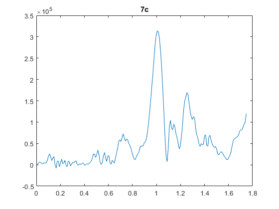

% plotMrmRetLog.m % This script prompts the user for a MRM-RET logfile, reads, parses, and % produces a "waterfall plot" of the motion filtered scans and detection lists % in the logfile clear all; close all; clc %#ok<*CLALL>
%dnm = '.'; fnm = 'MRM_002.csv';
[fnmb,dnmb] = uigetfile('*.csv');
fprintf('Reading logfile %s\n',fullfile(dnmb,fnmb));
[cfgb,reqb,scnb,det] = readMrmRetLog(fullfile(dnmb,fnmb));
[fnmt,dnmt] = uigetfile('*.csv');
fprintf('Reading logfile %s\n',fullfile(dnmt,fnmt));
[cfgt,reqt,scnt,dett] = readMrmRetLog(fullfile(dnmt,fnmt));
Reading logfile C:\Users\austinsbrown\Dropbox\ee384\lab11\background.csv
Reading logfile C:\Users\austinsbrown\Dropbox\ee384\lab11\scan.csv(only motion filtered is used)
rawscansI = find([scnb.Nfilt] == 1); rawscansV_background = reshape([scnb(rawscansI).scn],[],length(rawscansI))'; rawscansI1 = find([scnt.Nfilt] == 1); rawscansV_target = reshape([scnt(rawscansI1).scn],[],length(rawscansI1))'; scan_difference = abs(rawscansV_background(1:10,:) - rawscansV_target(1:10,:));
Tbin = 32/(512*1.024); % ns
T0 = 0; % ns
c = 0.29979; % m/ns
Rbin = c*(Tbin*(0:size(scan_difference(1,:),2)-1) - T0)/2;% Range Bins in meters
rbin = 90;
%Background plot
% plot(rbin,rawscansV_background(10,:))
%Taget plot
figure; plot(Rbin,rawscansV_target(10,:)), title('Target')
% Difference plot
figure;plot(Rbin,scan_difference(10,:)), title('Difference')
[a,i]=max(scan_difference(10,:)); %#ok<ASGLU>
distance=Rbin(i) %#ok<NOPTS>
distance =
0.9881
fs = 1/(Tbin*10^-9);
figure
l = length(scan_difference(10,:));
n = pow2(nextpow2(l));
y_dft = fft(scan_difference(10,:), n);
f = (-n/2:n/2-1)*(fs/n);
plot(f, abs(y_dft)/n);
title('6c ii'), xlabel('Frequncy'), ylabel('Magnitude')
figure
spectrum_plot(scan_difference(10,:), fs)
title('6c iii'), xlabel('Frequncy'), ylabel('Magnitude')
Wp = (2*(4.9*10^9))/fs;
Ws = (2*(5.6*10^9))/fs;
Rp = 1;
Rs = 20;
[Ord, Wn] = buttord(Wp, Ws, Rp, Rs);
[b,a] = butter(Ord, Wn, 'low');
yf = filter(b, a, scan_difference(10,:));
figure
spectrum_plot(yf, fs)
title('7b'), xlabel('Frequncy'), ylabel('Magnitude')
figure
plot(Rbin, yf)
title('7c')
Wp = (2*(.1*10^9))/fs;
Ws = (2*(.05*10^9))/fs;
Rp = 1;
Rs = 20;
[Ord, Wn] = buttord(Wp, Ws, Rp, Rs);
[b,a] = butter(Ord, Wn, 'high');
yf = filter(b, a, scan_difference(10,:));
figure
spectrum_plot(yf, fs)
title('8 Spectrum'), xlabel('Frequncy'), ylabel('Magnitude')
figure
plot(Rbin, yf)
title('8 Time Domain')

Wp = (2*(4.9*10^9))/fs;
Rp = 1;
Rs = 20;
[n1,Wn] = ellipord(Wp,Ws,Rp,Rs);
[b,a] = ellip(n1,Rp,Rs,Wp,'low');
yf = filter(b, a, scan_difference(10,:));
figure
spectrum_plot(yf, fs)
title('9 Lowpass '), xlabel('Frequncy'), ylabel('Magnitude')
figure
plot(Rbin, yf)
title('9 Lowpass'), xlabel('Distance')
Wp = (2*(4.9*10^9))/fs;
Rp = 1;
Rs = 20;
[n2,Wn] = ellipord(Wp,Ws,Rp,Rs);
[b,a] = ellip(n2,Rp,Rs,Wp,'low');
yf = filter(b, a, scan_difference(10,:));
figure
spectrum_plot(yf, fs)
title('9 highpass'), xlabel('Frequncy'), ylabel('Magnitude')
figure
plot(Rbin, yf)
title('9 highpass'), xlabel('Distance')